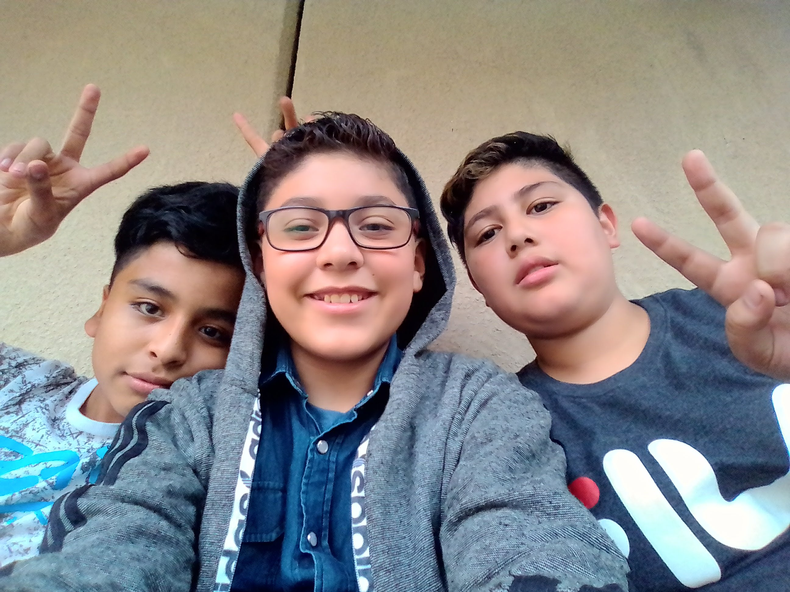
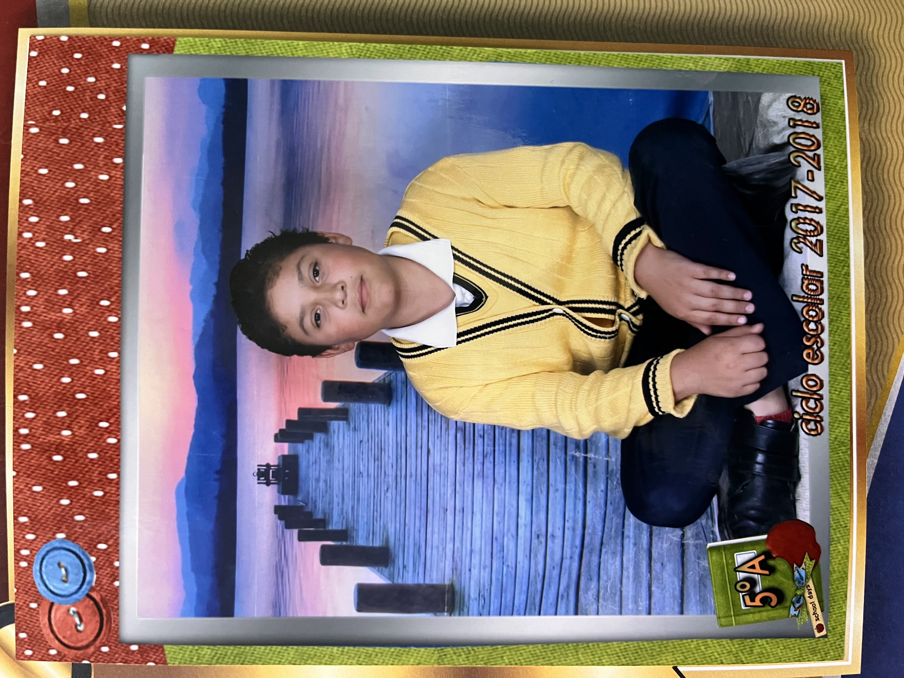

Al entrar a la secundaria, enfrenté uno de los retos más difíciles de mi vida: el bullying. En primer grado, sufrí burlas por mi peso, lo que afectó profundamente mi autoestima.
Con la llegada de la pandemia, mi inseguridad creció. Empecé a sentirme incómodo con mi rostro y buscaba formas de cubrirlo. El aislamiento me obligó a mirar hacia adentro y trabajar en mí mismo.
Cuando las clases presenciales regresaron, me encontré ya en tercer año, a punto de egresar. Para ese momento, había bajado de peso y me sentía un poco más seguro de mí mismo.
Fue entonces cuando conocí a una chica con la que inicié una relación a través de mensajes. Más tarde, en la escuela, nos reencontramos, aunque ya no éramos novios oficialmente. Ella tenía otro novio, pero durante un tiempo estuvimos "andando" a escondidas.
Fue una etapa intensa y algo complicada, marcada por muchas emociones y aprendizajes sobre el amor, la confianza y los límites.
 